阅读这篇文章必须要对汇编码有足够的了解，如果你对IA32汇编码还不够了解，可以先看看这篇文章：程序的机器级表示
Y86指令集体系结构
Y86指令集基本上是IA32指令集的一个子集。这个指令集就是我们处理器实现的目标。如下图：
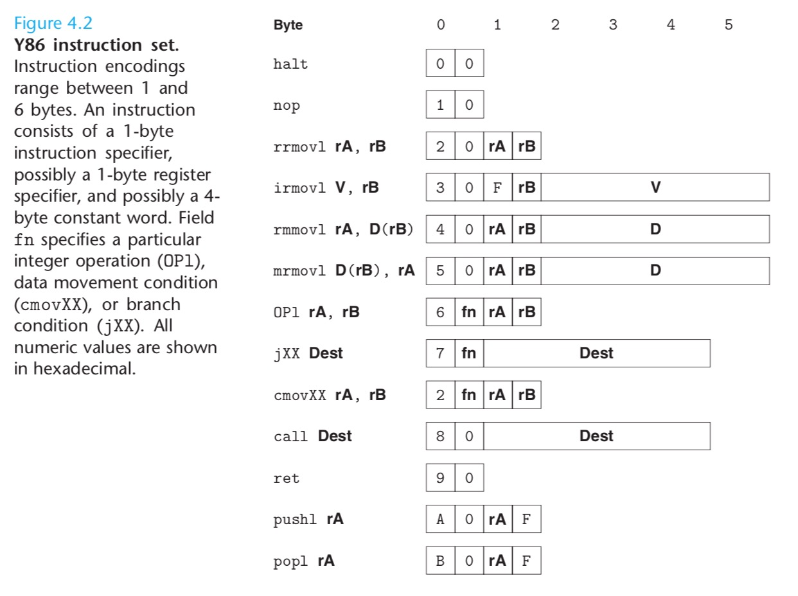
IA32的movl指令分成了4个不同指令：irmovl、rrmovl、mrmovl和rmmovl，i表示立即数Immediate，r表示寄存器Register，m表示存储器Memmory。第一个字母表示源，第二个字母表示目的。
这里不实现的功能有：
- 存储器引用方式是简单的基址+偏移量形式，不支持变址寄存器（second index register）和任何寄存器伸缩（scaling）。如果对操作数的结构不太了解可以看看这个：操作数指示符
- 和IA32一样不允许从一个存储器直接传送到另一个存储器地址。
- 不允许立即数传送到存储器
4个整数操作指令：addl、subl、andl、xorl
7个跳转指令：jmp、jle、jl、je、jne、jge、jg。
6个条件传送指令：cmovle、cmovl、cmove、cmovne、cmovge、cmovg。
另外还有：call、ret、pushl、popl，halt指令停止指令执行。IA32中有一个与之相当的指令hlt，IA32的应用程序不允许使用这条指令，因为它会导致整个系统暂停运行。对于Y86来说，执行halt指令会导致处理器停止，并将状态码设置为HLT。
指令编码
与IA32一样使用小端编码。
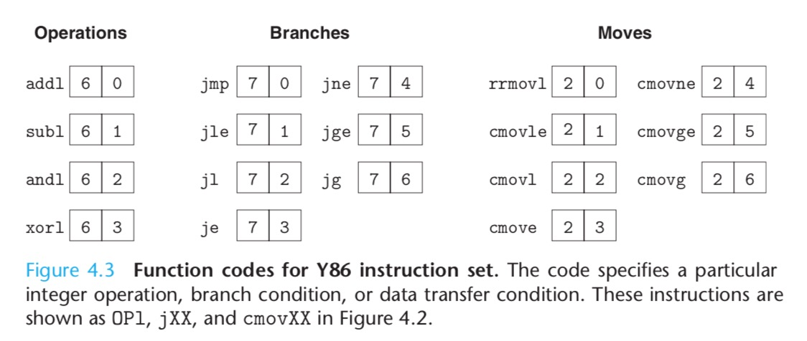
每条指令的第一个字节表明指令的类型，这个字节分为两部分，每部分4位：高4位是代码（code）部分，低4位是功能（function）部分。代码值为 0~0xB。可以观察到，rrmovl与条件传送指令有同样的代码部分，可以把它看作是一个无条件传送。
寄存器编码如下：
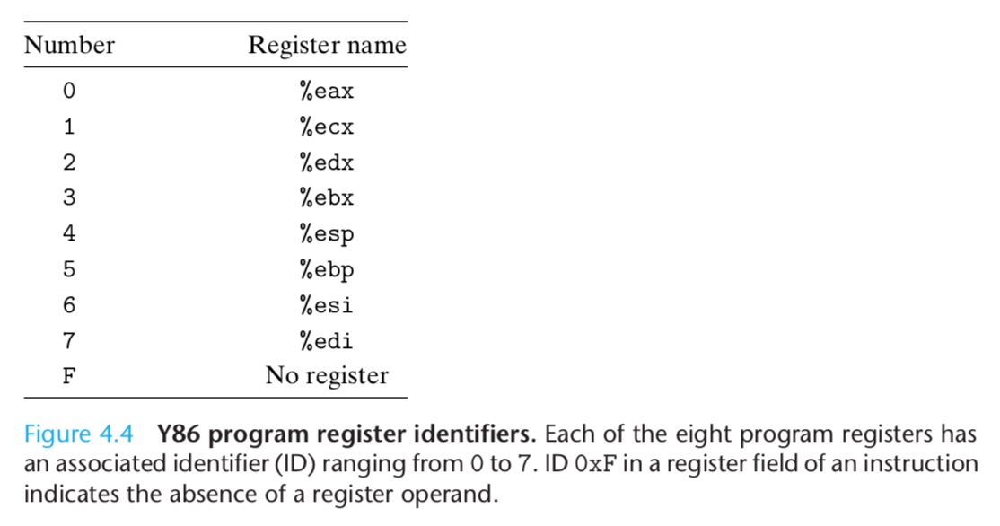
举个例子：用16进制表示指令 rmmvol %esp, 0x12345(%edx)的字节编码。
从上面图中可以看到，rmmovl第一个字节为40，由于%esp是4（占4位），%edx是2（占4位），所以第二个字节是42，最后再加上偏移量 00 01 23 45，小端表示是：45 23 01 00，所以最后得到指令的编码是：404245230100。
指令集的一个重要性质是字节编码必须有唯一解释，任意一个字节序列要么是一个唯一的指令，要么是一个不合法的指令。
相比于IA32，Y86没那么紧凑，IA32对寄存器只用了3位来编码，5位表明指令类型，所以IA32能将出栈入栈放进一个字节里。另外IA32可以将常数值编码成1、2、4字节，Y86总是编码成4字节。
RISC 和 CISC
- RISC: reduced instruction set computers，精简指令集
- CISC: complex instruction set computers，复杂指令集
Y86异常
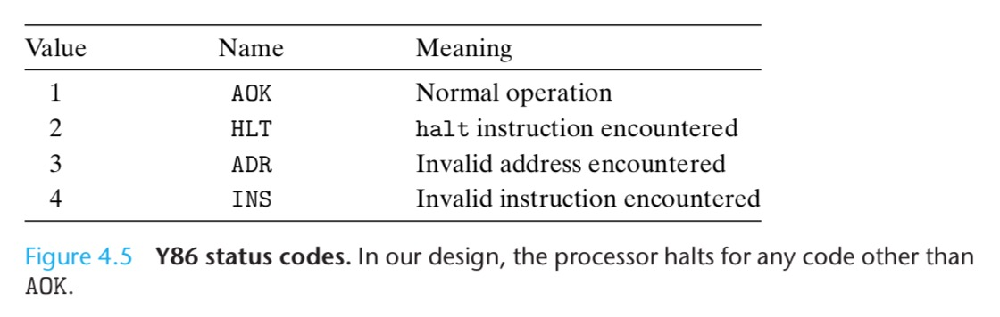
对于Y86，当遇到这些异常的时候，我们简单的让处理器停止执行指令。在更完善的设计中，处理器通常会调用一个 exception handler（异常处理程序），这个过程被指定用来处理遇到的某种类型的异常，例如放弃程序或调用一个用户自定义的 signal handler（信号处理程序）。
Y86程序
1 | int Sum(int *Start, int Count) |

可以看到Y86有时候需要两条指令来完成IA32一条指令就能完成的事。然而如果用数组索引来写这个程序，要转换成Y86会很困难，因为Y86没有伸缩寻址。
完整代码如下：
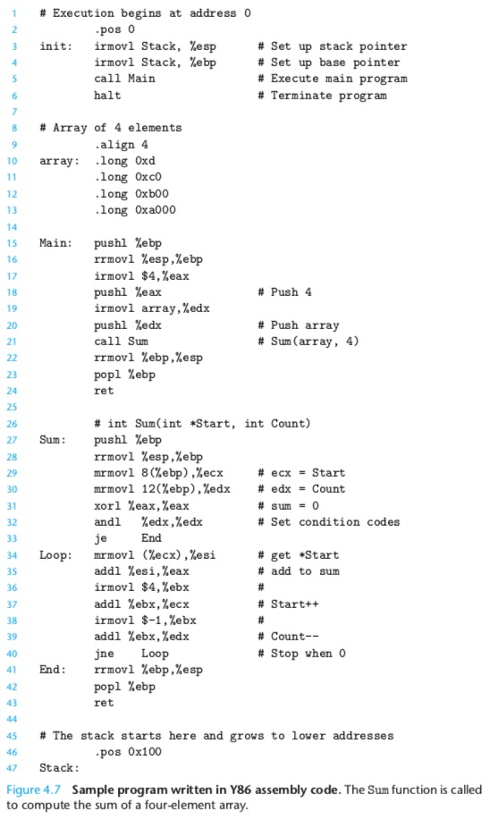
以.开头的是 assembler directive（汇编器命令），命令.pos 0告诉汇编器应该从地址0处开始产生代码。第3、4行使用的Stack标签，在最后有声明，其位置是0x100。第9到13行声明了一个数组，4字节对齐，值分别是：0xd，0xc0，0xb00，0xa000，array标签是起址。
细节问题，
pushl %esp（这个指令只能用汇编语言写，C语言无法产生）是先把%esp的值转移到栈，还是先%esp减4再将结果转移到栈，实际上不同版本的intel处理器都会产生不同的结果，所以一个很重要的教训是要保证细节上的一贯性。
逻辑设计和硬件控制语言HCL（Hardware Control Language）
逻辑门
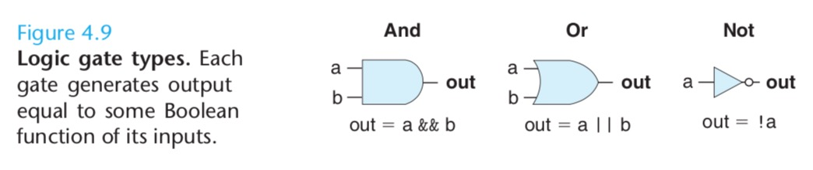
组合电路和HCL语言
构建一个组合电路有两条限制：
- 两个或多个逻辑门的输出不能连接在一起。这样会导致线上的信号矛盾，产生不合法的电压或电路故障。
- 必须是无环的，也就是不能形成回路。
下面是个简单的例子：

用HCL来写这个网的函数就是：bool eq = (a && b) || (!a && !b)
HCL是用来C语言风格的语法，但这里同C语言不一样，该语句的意思不是执行了一次计算并将结果放入存储器，而是使用一个名字eq来称谓一个表达式。
实际上上面的组合电路就是同或，异或的表达式是：bool eq = (!a && b) || (a && !b)
多路复用器（multiplexor，通常称为：MUX）：
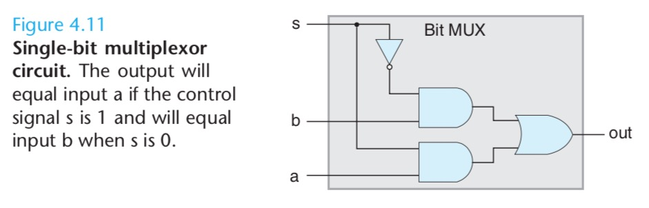
bool out = (s && a) || (!s && b)
字级的组合电路和HCL整数表达式
通常我们设计能对字（word）进行操作的组合电路，字级电路中用到的就是HCL整数表达式了。
字级与电路：
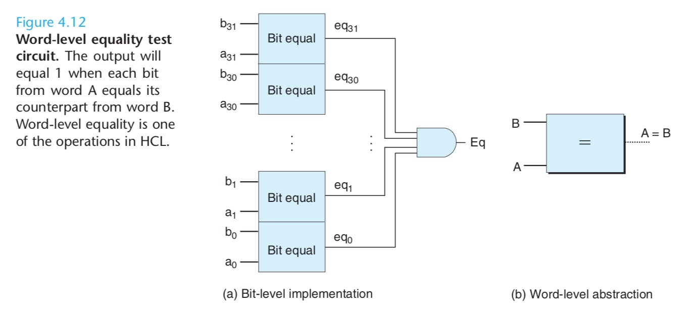
bool Eq = (A == B);
也可以用异或来实现：
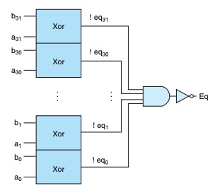
在HCL中，多路复用函数是用情况表达式（case expression）来描述的。情况表达式的通用格式如下：
1 | [ |
同C语言的switch语句不同，我们不要求不同的选择表达式之间互斥。从逻辑上讲，这些选择表达式是顺序求值的，且第一个求值为1的情况就会被选中。
字级多路复用电路：
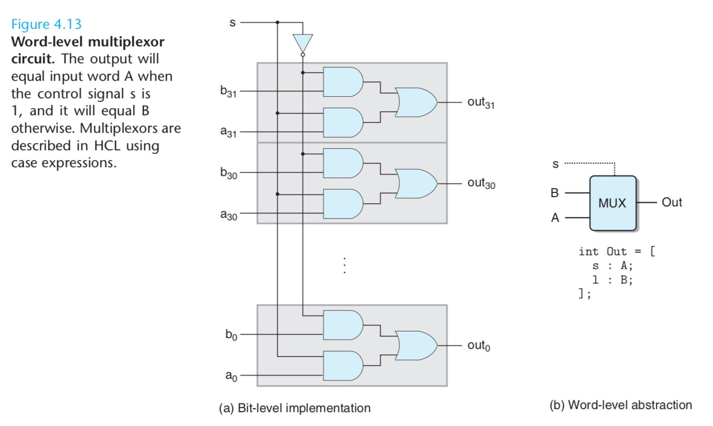
用HCL来描述就是：
1 | int Out = [ |
大多数人第一眼是看不懂这个表达式的，其实里面有个暗含的条件：先执行 s: A; 如果失败（没有输出A）才会再执行 1: B;。而1: B;实际上是!s&&1: B;的简写。没有输出A就已经代表s是0了，那么!s就是1。
四路复用器：
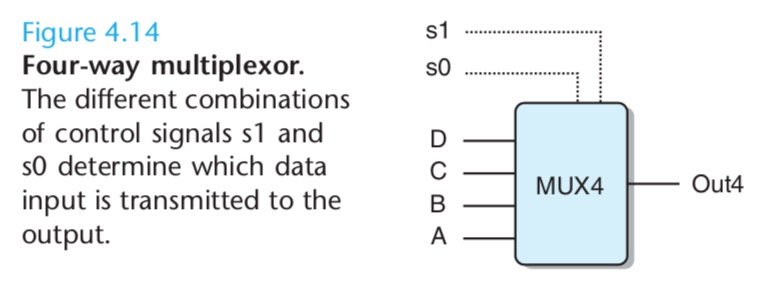
1 | int Out4 = [ |
第二个表达式可以写成!s1，而不用写的更完整!s1&&s0，是因为另一种可能s0=0已经出现在了第一个选择表达式了，若能到达第二个选择表达式，则s0=1。类似的，第三个表达式可以写成!s0，第四个表达式可以简单的写成1。
来看最后一个例子，假设我们想设计一个逻辑电路来找一组字A、B和C中的最小值，如下图所示：
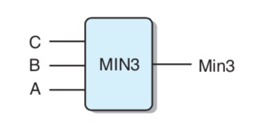
用HCL来表达：
1 | int Min3 = [ |
算术逻辑单元（arithmetic/logic unit, ALU）

集合关系
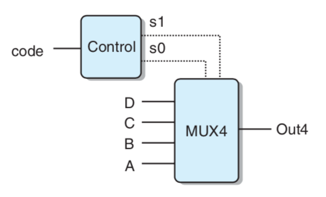
在这个电路中，两位的信号code就可以用来控制对4个数据字A、B、C和D做选择。根据可能的code值，可以用相等测试来表示信号s1和s0的产生：
1 | bool s1= code==2 || code==3; |
还有一种更简洁的方式来表示这样的属性：当code在集合{2,3}中s1为1，而code在集合{1,3}中s0为1：
1 | bool s1= code in {2,3}; |
判断集合关系的通用格式：iexpr in {iexpr1, iexpr2, ... , iexprk}
存储器和时钟
组合电路从本质上讲，不存储任何信息，它们只是简单的根据输入信号产生一个输出信号。为了产生时序电路（sequential circuit），也就是有状态并且在这个状态上进行计算的系统，我们必须引入按位存储信息的设备。存储设备都是由同一个时钟控制，时钟是一个周期性信号，决定什么时候要把新值加载到设备中。考虑两类存储器设备：
- 时钟寄存器（简称寄存器）存储单个位或字。时钟信号控制寄存器加载输入值。
- 随机访问存储器（简称存储器）存储多个字，用地址来选择该读或该写哪个字。随机访问存储器的例子包括：1.处理器的虚拟存储器系统（由硬件和操作系统结合起来使处理器可以在一个很大的地址空间内访问任意的字，硬件上包括由缓存、内存、外存）。2.寄存器文件，在此，寄存器标识符作为地址。在IA32或Y86处理器中，寄存器文件有8个程序寄存器（%eax、%ecx等）。
正如我们看到的那样，在说到硬件和机器级编程时，“寄存器”这个词是有两个不同的意思的。需要避免歧义的时候，我们分别称呼这两类寄存器为：硬件寄存器和程序寄存器。
下图说明了硬件寄存器是如何工作的：

寄存器是作为电路不同部分中的组合逻辑之间的屏障。我们的Y86处理器会用时钟寄存器保存程序计数器（PC），条件码（CC）和程序状态（Stat）。
下图展示了一个典型的寄存器文件：
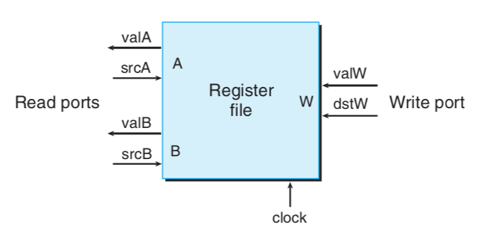
寄存器文件有两个读端口，一个写端口。每个端口都有一个地址输入，地址是图4-4中的寄存器标识符。这样一个多端口随机访问存储器允许同时进行多个读和写操作。
虽然寄存器文件不是组合电路，因为它有内部存储。不过在我们的实现中，从寄存器文件中读数据就好像它是一个以地址为输入、数据为输出的一个组合逻辑块。当srcA或srcB被设成某个寄存器ID时，在一段延迟之后，存储在相应寄存器上的值就会出现在valA或valB上。
向寄存器文件写入字是由时钟信号控制的，控制方式类似于将值加载到时钟寄存器。每次时钟上升时，输入valW上的值会被写入dstW指明的寄存器上。当dstW设为特殊的ID值0xF时，不会写任何程序寄存器。
由于寄存器文件既可以读又可以写，一个很自然的问题就是：如果我们同时读和写一个程序寄存器会发生什么？答案简单明了：我们会看到一个旧值到新值的变化。所以在设计处理器的时候要把这个问题考虑进去。
我们的处理器有一个随机访问存储器，如下图所示：
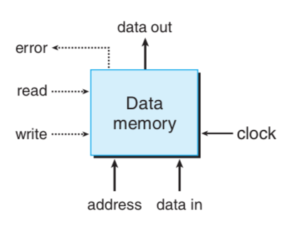
同寄存器文件一样，从存储器中读的操作方式类似于组合逻辑：如果我们在输入address上提供一个地址，并将write控制信号设置为0，那么经过一些延迟之后，存储在那个地址上的值会出现在输出data上。如果地址超出了范围，error信号会置为1，否则就是0。
写存储器是由时钟控制的：我们将address设置为期望的地址，将data in设置为期望的值，而write设置为1。然后我们控制时钟时，只要地址是合法的，就会更新相应的地址中的值，如果是非法地址，error就会置为1。
Y86的顺序实现
将处理组织成阶段
- 取指（fetch）：从存储器取指令，地址为PC所指的地址。从指令中抽取出指令指示符字节的两个四位部分，称为icode（指令代码）和ifun（指令功能）。
- 译码（decode）：译码阶段从寄存器文件最多读入两个操作数，得到值valA和valB（如果是两个的话）。通常，它读入指令rA和rB字段指明的寄存器，不过有些指令是读寄存器%esp的。
- 执行（execute）
- 访存（memory）：访存阶段可以将数据写入存储器，或者从存储器读出数据。读出的值为valM。
- 写回（write back）：写回阶段最多可以写两个结果到寄存器文件。
- 更新PC（PC update）：将PC设置成下一条指令的地址。
处理器无限循环，执行这些阶段。在我们简化的实现中，发生任何异常时，处理器就会停止。比如：它执行halt指令或非法指令，或者它试图读或者写非法地址。在更完整的设计中，处理器会进入异常处理模式，开始执行由异常的类型决定的特殊代码。
在硬件上复制逻辑块的成本比软件中有重复代码的成本要大得多。而且在硬件系统中处理许多特殊情况和特性要比用软件来处理困难得多。
我们面临的一个挑战是将每条不同指令所需要的计算放入到上述的通用框架中。我们会使用图4-17中所示的代码来描述不同的Y86指令的处理。图4-18到4-21描述了不同Y86指令在各阶段是怎样处理的。


让我们看一个具体的例子，图4-17中的第三条指令：
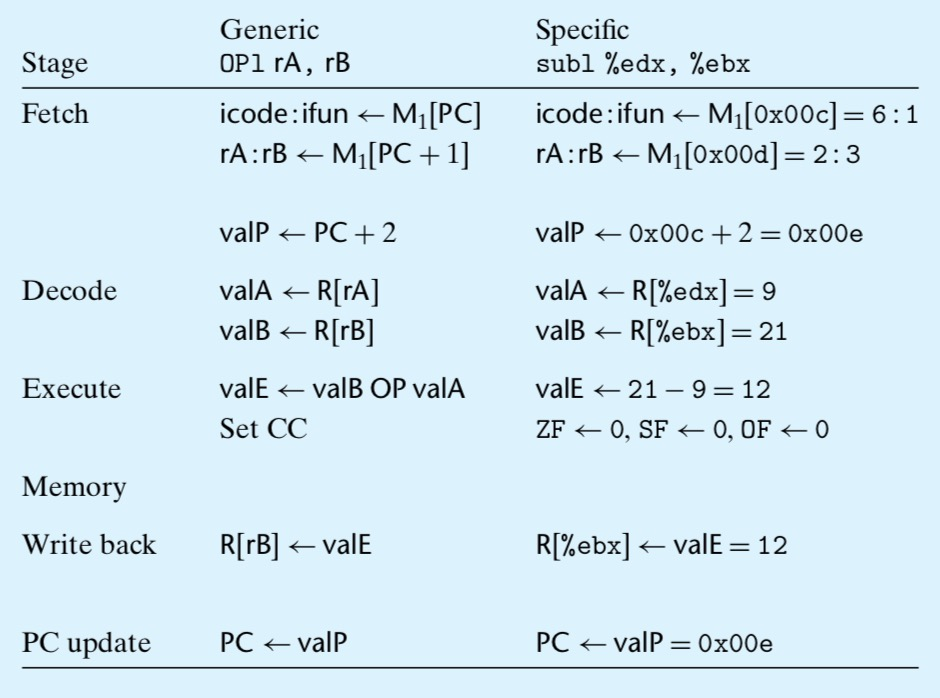
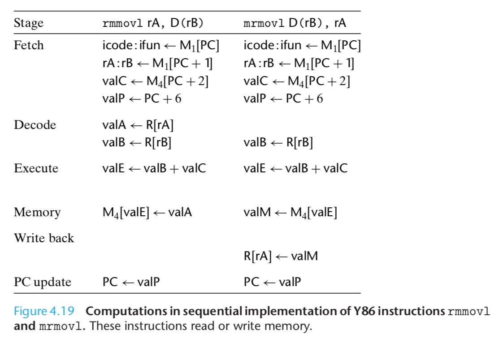
图4-17中第五条指令：


图4-17中第六条指令：
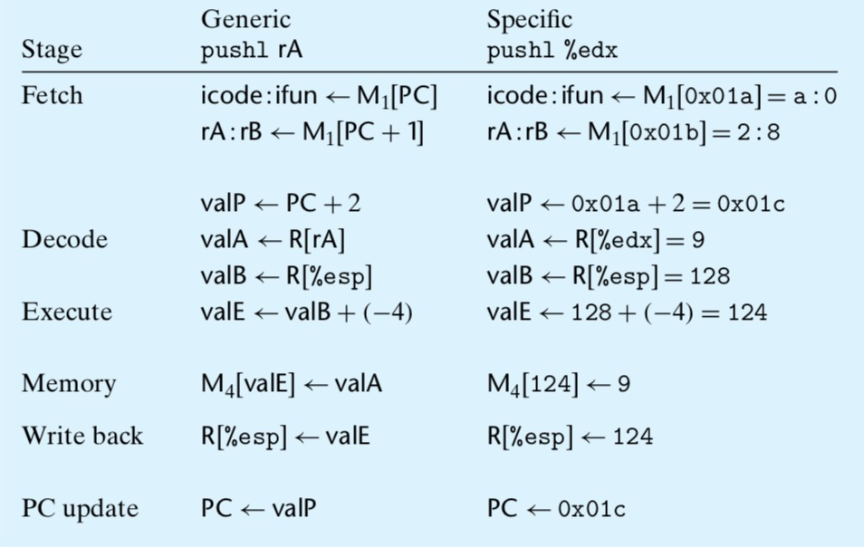
图4-21表明了三类控制转义指令的处理：各种跳转、call和ret。

图4-17中第8条指令：

图4-17中第13条指令：
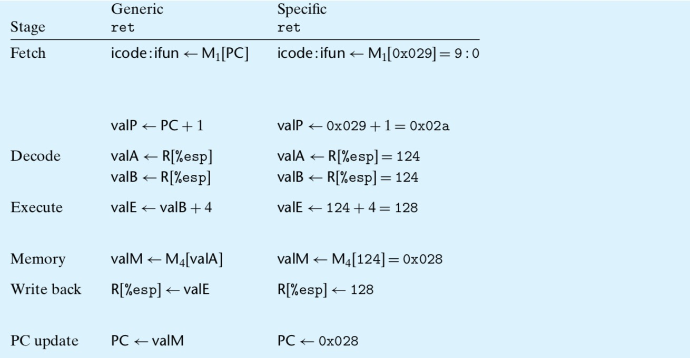
SEQ硬件结构
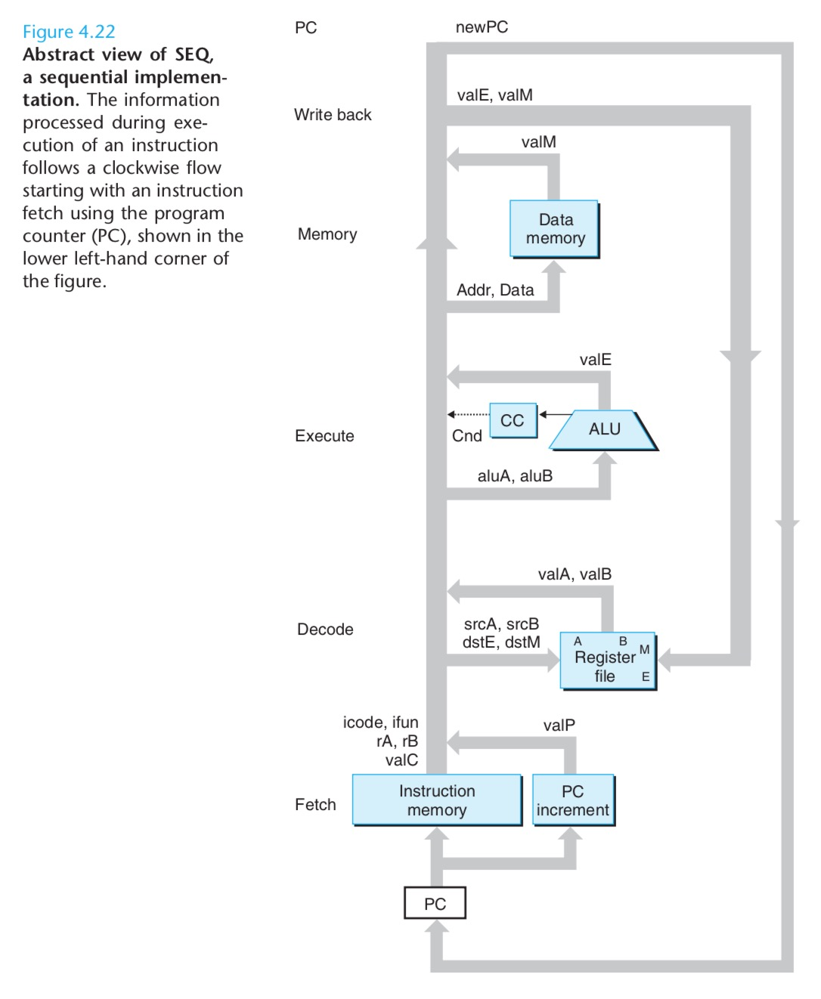